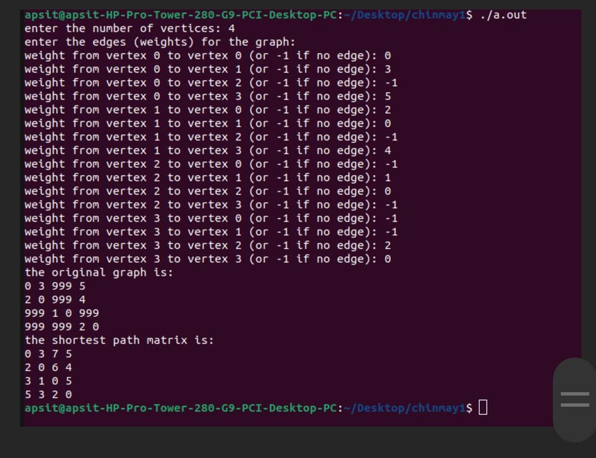

Program 1:
#include <stdio.h>
#include <stdlib.h>
void floydWarshall(int **graph, int n);
int main(void) {
int n, i, j;
printf("Enter the number of vertices: ");
scanf("%d", &n);
// Allocate memory for the graph
int **graph = (int **)malloc(n * sizeof(int *));
for (i = 0; i < n; i++) {
graph[i] = (int *)malloc(n * sizeof(int));
}
// Input edges (weights) from the user
printf("Enter the edges (weights) for the graph:\n");
for (i = 0; i < n; i++) {
for (j = 0; j < n; j++) {
printf("Weight from vertex %d to vertex %d (or -1 if no edge): ", i, j);
scanf("%d", &graph[i][j]);
// If no edge, set a large value (representing infinity)
if (graph[i][j] == -1) {
graph[i][j] = 999;
}
}
}
// Print the original graph
printf("The original graph is:\n");
for (i = 0; i < n; i++) {
for (j = 0; j < n; j++) {
printf("%d ", graph[i][j]);
}
printf("\n");
}
floydWarshall(graph, n);
// Print the shortest path matrix
printf("The shortest path matrix is:\n");
for (i = 0; i < n; i++) {
for (j = 0; j < n; j++) {
printf("%d ", graph[i][j]);
}
printf("\n");
}
// Free allocated memory
for (i = 0; i < n; i++) {
free(graph[i]);
}
free(graph);
return 0;
}
void floydWarshall(int **graph, int n) {
int i, j, k;
for (k = 0; k < n; k++) {
for (i = 0; i < n; i++) {
for (j = 0; j < n; j++) {
if (graph[i][j] > graph[i][k] + graph[k][j]) {
graph[i][j] = graph[i][k] + graph[k][j];
}
}
}
}
}

Algorithm :
1. Start
2. Prompt the user to enter the number of vertices (n) in the graph.
3. Allocate memory for the adjacency matrix representing the graph.
4. Prompt the user to input the weights of edges between vertices.
5. Initialize the adjacency matrix with the provided weights, setting -1 to represent no edge and a large value to represent infinity.
6. Print the original graph.
7. For each vertex k in the graph:
a. For each pair of vertices i and j:
i. If the shortest path from vertex i to vertex j passing through vertex k is shorter than the current shortest path, update the shortest path.
8. Print the shortest path matrix.
9. Deallocate memory.
10. End